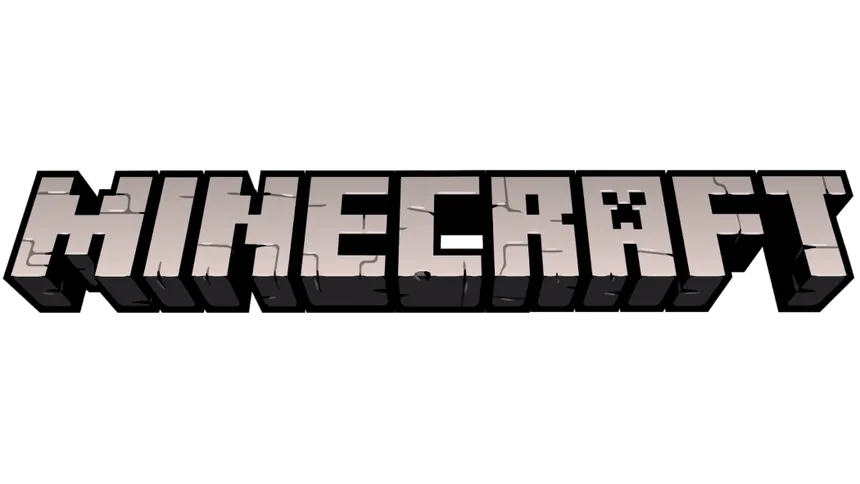
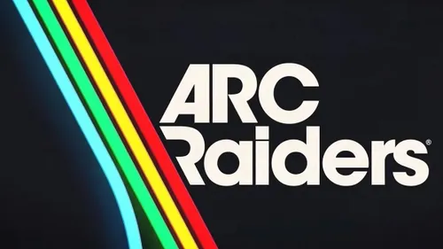
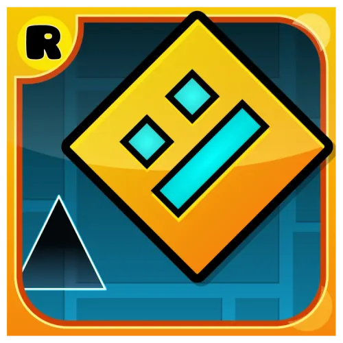

Sport and other activities
Miniature Painting
In this section, I will share some of my passions that are unrelated to work or engineering.
I really enjoy painting mini figurines from sci-fi universes. It allows me to express my creativity and patience.
Image 1
Image 2
Image 3
Image 4
Video Games
Gaming is a big part of my life and a source of inspiration for my career in game development. Here are some of my favorite games:
Old School RuneScape

Minecraft

Arc Raiders

Geometry Dash